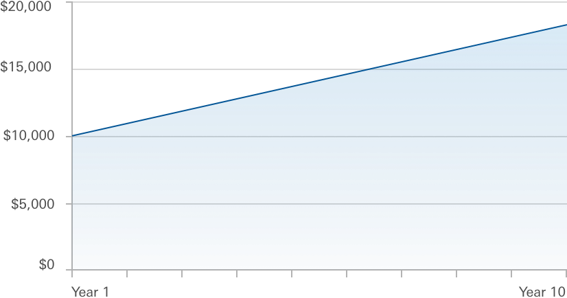

First, determine the total amount you want to have in your rainy day fund.
This is the range we recommend based on potential job loss duration and your household expenses. Selecting your total emergency savings target is personal, based on where you are in your life or how prepared you want to be.
The main goal of your emergency fund is to prepare for things you can’t predict. But thinking ahead to potential scenarios can help ensure you’re prepared. Consider the following when deciding whether to target the higher end or lower end of your recommended savings range.
Think of upcoming expenses you might have soon
- A replacement hot water heater
- New brake pads for your car
- An unplanned family visit
Consider any potential instability in either partner’s job
- If there has been or may be any layoffs
- If your current company offers (or does not offer) a severance package
Understand how market volatility might impact your available funds
When the market is down, your investment balance might be lower than you'd like when you need funds.Explore how cash and investments work together for you
Having cash on hand to draw on while markets rebound is a smart way to stay prepared and still take advantage of growth.Now, adjust how you split your savings between cash and investments.
Having a portion of your rainy day savings in cash is still smart, because it is the most quickly accessible. Cash has the lowest possible risk, but also carries little to no opportunity for returns.
Hypothetical Growth of $10,000
Many investments are accessible when you need them, so why keep your money on the sidelines? Over 10 years, $10,000 invested with an annual return of 5.5% would be worth $17,081 today. This is just a sample of how an investment can grow.
Note: This illustration depicts the investment return of a hypothetical portfolio over a 10-year period. The hypothetical portfolio has a staring value of $10,000 and grows by an average of 5.5.% annually. The portfolio balances shown are hypothetical and do not reflect any particulat investment. The rate is not guaranteed and the value of a true investment would fluctuate. The final account balances do not reflect any taxes or penalties that might be due upon distribution. Costs are one factor impactiong total returns. There may be other material differences between products that must be considered prior to investing.